conVRse
conVRse is an immersive learning adventure that places users in the heart of another culture, with opportunities to build the three essential elements of language: vocabulary, listening, and speaking. Using virtual reality, conVRse creates an atmosphere where users can interact, socialize, and collaborate with other learners and native speakers — a delightful, more impactful way to acquire a second language.
- Team
- 2 researchers
2 designers - Role
- Designer
- Year
- 2016
“How might the language learning experience be supported and facilitated through the use of modern technologies such as virtual reality?”
Research
We started by researching language-learning theories and interviewing linguists at the University of Washington’s Language Department, then interviewed 12 participants to understand the problems they faced with current tools. That research and a competitive analysis pointed to the need for a more immersive, socially interactive environment — which led us to VR. To learn more, we spoke with industry experts, attended VR meetups, evaluated several platforms, and settled on AltSpaceVR.
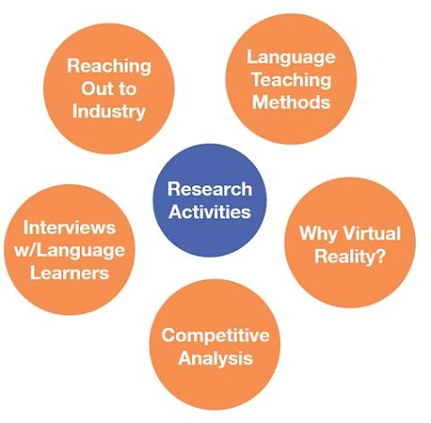
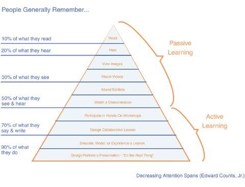
Language-learning apps like Duolingo and Rosetta Stone had already proven the market, but true fluency requires immersion in an environment where the target language is the primary medium of communication — something VR can simulate regardless of time or distance. Our research mapped the opportunity space across social vs. user-driven and program-driven dimensions, and pointed clearly toward the social end of the spectrum, since social interaction is key to the hardest part of language learning: speech.
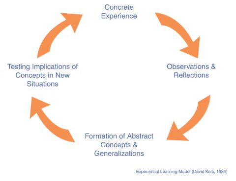
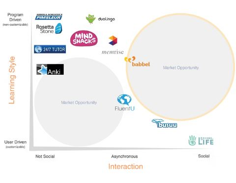
Design implementation
Interviews revealed that true beginners need heavy moderation to have social interactions in a new language, so we targeted learners with some basic knowledge who wanted to practice for business or travel. Using SketchUp, we modeled an entire café environment — mimicking a typical Parisian café with open spaces, a fountain area, and lounge areas for social interaction — where users could practice ordering coffee, learn about different foods, conversational structure, and cultural etiquette, iterating with lighting and higher-fidelity textures.
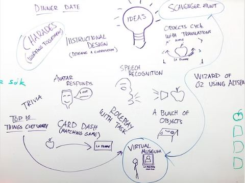
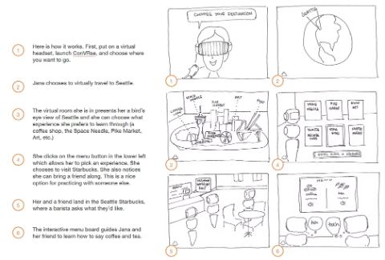
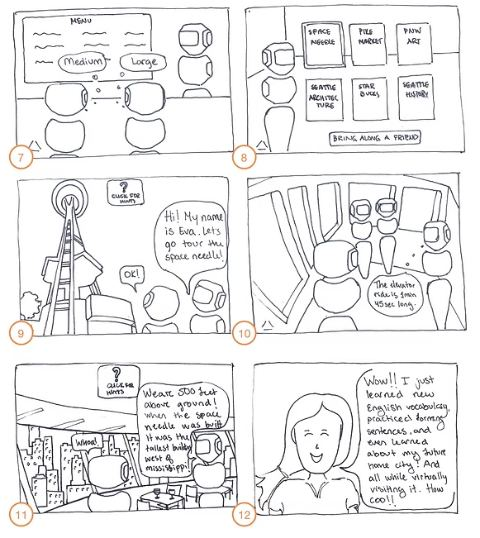
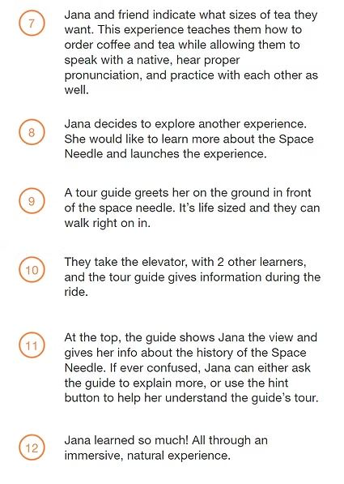
Bringing the model from SketchUp Pro into AltSpace required working within AltSpace’s specific constraints — rendering only through three.js in conjunction with Oculus’ SDK — which shaped how the environment was ultimately built and previewed.
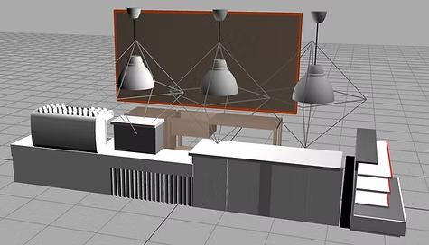
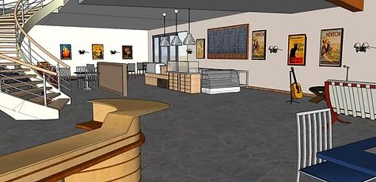
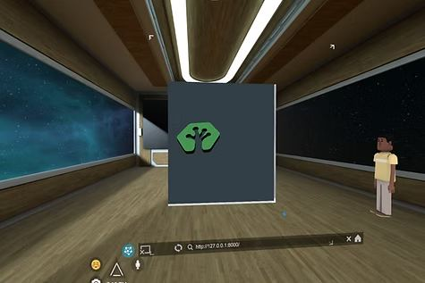
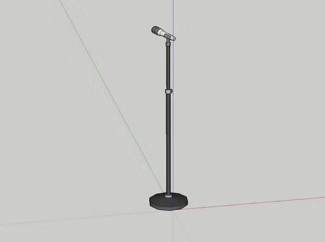
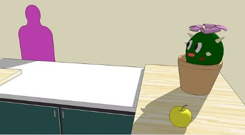
Five SketchUp renders of the café environment, built for the AltSpaceVR experience.
Results
The project won Best in Show at our department’s annual Capstone Presentation. Intel and the AltSpace team both expressed interest in the concept, and user feedback confirmed the core hypothesis about engagement — as one participant put it, “When I’m in this thing, I feel so engaged by it.”